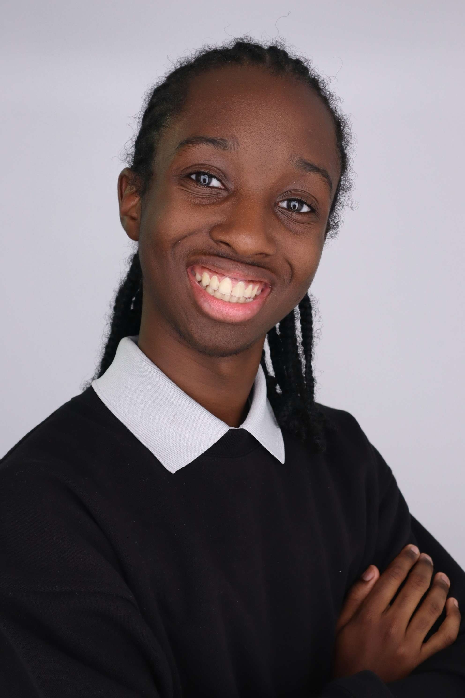

Projects
Selected work
Here are some of the projects I've worked on.
No projects in this category yet — add a card with a matching data-category.

Full-stack web app (template)
Describe your REST or full-stack project: auth, database, deployment. Swap links when the repo or demo is public.

Security lab / CTF notes
Summarize a security project: tooling used, vulnerabilities studied, or blue-team automation — keep details ethical and high-level if sensitive.

ML classifier or NLP mini-project
Dataset, model choice, metrics (accuracy, F1), and what you’d try next. Link notebooks or a small demo if available.
Undergraduate research project
Advisor, question you studied, methods, and a link to a poster or paper if allowed. Clarify your individual contribution in team settings.

FinTech dashboard or market tool
Data sources, risk or compliance considerations, and how you validated numbers. Good fit for analytics + API integration stories.

Hackathon or course capstone
Short timeframe, team size, and what shipped vs. what you’d refactor. Great for showing scope and prioritization.

Cross-topic example (AI + Cyber)
This card uses two categories in data-category so it appears under both AI / ML and Cybersecurity. Replace with a real project.